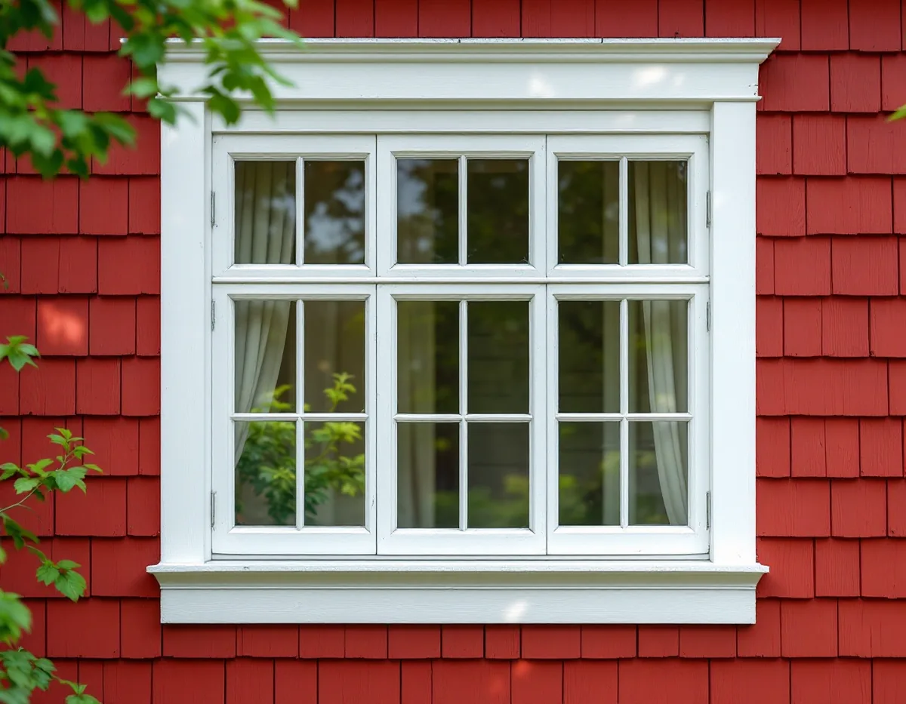
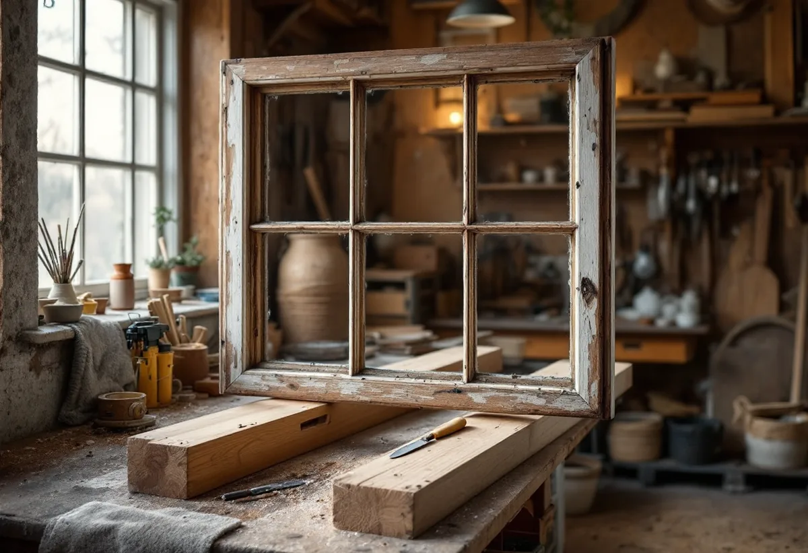
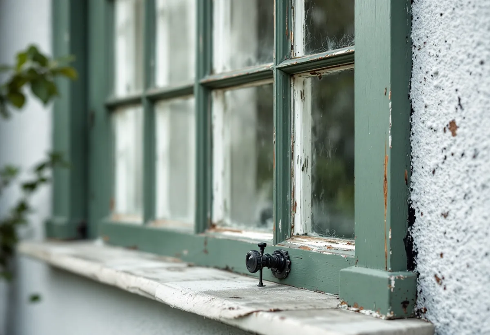

Inventering
Varje fönster besiktigas för sig: virke, kitt, färg och beslag.
I Gamla Enskede är fönstren en av de detaljer som gör trädgårdsstaden till riksintresse, och de flesta går att renovera i stället för att bytas. Geal Entreprenad AB renoverar fönster i villor och radhus i Gamla Enskede, Enskededalen och Enskedefältet och behåller bågarnas mått och spröjsar.

Stadens strategi för småhusområden beskriver fönstren i Gamla Enskede: de sitter grunt i förhållande till fasadlivet och är oftast två- eller treluftsfönster med stående proportioner. Ovanför tvärposten är rutorna i många fall småspröjsade. På de putsade husen bygger färgsättningen på kontrast mellan fasad och fönstersnickerier, som ofta har en dovare kulör.
Gamla Enskede anlades efter Per Olof Hallmans stadsplan från 1908, och det nationalromantiska inslaget med fönster med småspröjsade rutor blev tydligt där. Strategin räknar ursprungliga byggnadsdetaljer som fönster, entrédörrar och räcken till trädgårdsstädernas karaktärsdrag.

Riksantikvarieämbetet beskriver hur glasformaten växte under 1800-talet tills spröjsarna inte behövdes. Kring sekelskiftet och fram till 1930 kom stilideal med historiska förebilder, och spröjsarna kom tillbaka. Det är den tiden Gamla Enskedes fönster hör till.
Spröjsarna är ofta smäckra och det är där rötskador och lös kitt syns först. Vid en renovering byts bara skadade spröjsar och delar av bågen, med nytt virke som skarvas in efter det gamla. Profilerna behålls, så att fönstret ser likadant ut efteråt.
Stockholms stad räknar upp vilka ändringar av fönster som kan kräva bygglov: byte av material eller kulör, ändrade dimensioner, proportioner eller profiler på karmar, bågar och spröjsar, ändrad upphängning och ändrad indelning, till exempel att lägga till spröjs eller ta bort mittpost. Gamla Enskede är riksintresse för kulturmiljövården, och där krävs bygglov för åtgärder som annars är lovfria.
En renovering som behåller material, kulör, mått och indelning ändrar inte fönstret och är underhåll. Det är ett av skälen till att renovering ofta är den enklaste vägen i Gamla Enskede. Om fasaderna i stadsdelen kan du läsa under fasadrenovering i Enskede.
Riksantikvarieämbetet rekommenderar linoljefärg vid utvändig fönstermålning, både vid renovering och nymålning. Linoljefärgen tränger in i virket och fäster väl, medan latexfärger lägger sig som en film på ytan. Till kittning av gamla fönster rekommenderas linoljekitt eller annat kitt på vegetabilisk oljebas, och falsen ska vara rengjord och grundad innan kittet läggs.
Normalt räcker det att kitta om bågens nedre del. Målningen görs med grundning, mellanstrykning och slutstrykning, och partier där färgen sitter bra slipas i stället för att grundas. Om fönsterbyte i stort kan du läsa under fönsterbyte.
Riksantikvarieämbetet skriver att dagens tätningslister är väl lämpade för gamla fönster och ger en avsevärd förbättring av både ljud- och värmeisolering. Det är innerbågen, inte ytterbågen, som ska tätas, och fönstret ska målas och justeras innan listerna sätts upp.
Med rätt tätningslist och tillsatsruta blir ett gammalt fönster enligt Riksantikvarieämbetet lika energisnålt som ett nytt. Enligt stadens områdesfakta för 2025 finns 898 småhus med äganderätt i Gamla Enskede, och i många av dem sitter fönster som går att ta hand om på det sättet. Vi börjar med att se på varje fönster för sig.

Varje fönster besiktigas för sig: virke, kitt, färg och beslag.
Fönster för fönster, så att du ser vad som behöver göras.
Skadade spröjsar och bottenstycken byts med nytt virke som skarvas in.
Linoljekitt och linoljefärg i grundning, mellan- och slutstrykning.
Innerbågen tätas, bågarna justeras och beslag kompletteras.
Vi går igenom fönstren och skriver ner kulör och material.
Skatteverket räknar reparation av fönster och målning av fönster på ett småhus som rotarbete. Du ska äga huset när arbetet utförs.
Avdraget är högst 30 procent av arbetskostnaden, högst 50 000 kronor per person och år och högst 75 000 kronor tillsammans med rutavdrag. Material och resor ger inget avdrag. Geal drar avdraget direkt på fakturan.
Antalet fönster och bågar, mängden spröjs, hur mycket virke som behöver bytas, om bågarna renoveras på plats eller i verkstad och om innerbågen ska kompletteras. Efter ett gratis platsbesök får du ett skriftligt kostnadsförslag.
Byta eller renovera fönster.
Fönsterbyte i Stockholm →Takbyte, takbesiktning och plåtarbeten.
Takläggare i Enskede →Trädgårdsstad med lertegel.
Takrenovering i Enskede →Trädgårdsstaden, kartan och lovet.
Attefallshus i Enskede →Typhus i trä, träbjälklag och bostadsrätt.
Badrumsrenovering i Enskede →Byggplatsen, gatan och träden.
Byggföretag i Enskede →Trädgårdsstadens kulörer.
Fasadmålning i Enskede →Trähus, putsade typhus och småstugor i Enskede.
Fasadrenovering i Enskede →Fönster i riksintresset.
Fönsterbyte i Enskede →Lut, såpa och olja på fur och gran.
Golvläggare i Enskede →Slipa fram gamla brädgolv i villan.
Golvslipning i Enskede →Typhus, dubbelhus och småstugor.
Köksrenovering i Enskede →Trädgårdsstad, egnahem och småstugor i Enskede.
Målare i Enskede →Snörasskydd, rännor och verandaplåt i Enskede.
Plåtslagare i Enskede →Verandor, entréer och bodar i trädgårdsstaden.
Snickare i Enskede →Takfallet, höjden och riksintresset.
Takbyte i Enskede →Tapet i vindsrum och snedtak.
Tapetsering i Enskede →Små tomter och riksintresse.
Tillbyggnad i Enskede →Renovera innan ni flyttar in.
Totalrenovering i Enskede →